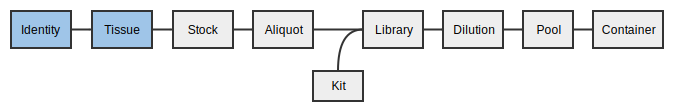
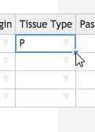
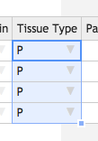
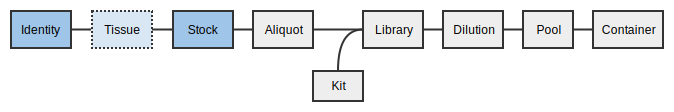
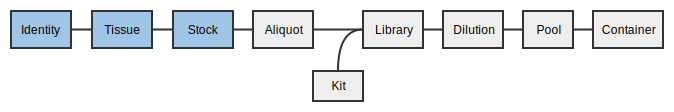
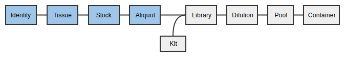

MISO
MISOSamples Tutorial
1. Logging in
Much like the old Geospiza LIMS, you need to log in to MISO LIMS in order to make changes to any LIMS entities. Logging in lets us record any changes you make and also allows us to set appropriate permissions.
If you were able to log in to Geospiza LIMS, you already have the correct
permissions and can proceed to logging in. If you are a new user, you will need
to contact helpdesk@oicr.on.ca so that they put you into the appropriate
Active Directory group, MISO_ROLE_INTERNAL.
Try to log in now:
- Click on http://miso.gsi.oicr.on.ca.
- Enter your username (e.g. jdoe) and password and click the Login button. MISO uses the same username and password as your OICR email account.
If all goes well, you should see the MISO Dashboard and see a message at the top right: "Logged in as: jdoe".
2. Receiving samples
A Sample contains information about the material upon which the sequencing experiments are to be based. Samples can be used in any number of sequencing Experiments in the form of a Library that is often processed further into pooled Dilutions.
Every received Sample must have an Identity. The Identity corresponds to the individual or organism with whom the sample originated, i.e. the donor. MISO requires you to assign an external name, which is usually an identifier from another institution like a Donor ID.
When material is received for sequencing, it can be in many different forms, called Sample Classes in MISO. Here are the classes of Sample that can be received:
- Cell line
- Tumour tissue (Primary or Metastatic)
- Reference tissue
- Xenograft tissue
- gDNA (untreated or whole genome amplified)
- cDNA
- whole RNA
Depending on which Sample Class is chosen, more or less fields appear on the Create Sample page.
In this workshop, we will create six Samples with four different Identities in the Project you created in the last session.

2.1 Entering a single Tissue
There are two ways of entering Samples into MISO: Single and Bulk. We will start
by entering a single Sample for reference tissue from the Identity ID1.
- On the left hand menu under Tracking, click Samples.
- Click the Add Sample button on the right hand side. There are two tabs across the top. Ensure that Single is selected.
- In the Sample Information section, enter or select the following:
- Project: Select the project you created in the last exercise.
- Alias: leave blank. This will be auto-generated based on other information in this form.
- Description:
Reference 1. - Date of Receipt: Select a date
- Scientific Name:
Homo sapiens. - Sample Type: select
GENOMICfrom the drop down. - QC Status: select
Readyfrom the drop down.
- In the Identity section:
- External names : this is the name of the individual, whether internal or external.
For example, an external identifier would be "Morgan" (internally we refer to her as plain ol' MORG_0001).
- Click Find or Create Identity.
- In the pop-up window, enter external name: project short name
_ID1(e.g.,PROJ_ID2). This is the name given to the donor by the external institute that the tissue came from. Record this in your worksheet.
- Click Validate External Name(s).
- From the dropdown, select
First Receipt. - Click Select.
- Sex: Select any item from the dropdown.
- External names : this is the name of the individual, whether internal or external.
For example, an external identifier would be "Morgan" (internally we refer to her as plain ol' MORG_0001).
- In the Details section, select the Sample Class
Reference Tissue. Record the class in your worksheet. - In the Tissue section, select or enter the following to create a reference Sample.
- Tissue Origin:
Ly (Lymphocyte) - Tissue Type:
R (Reference or non-tumour, non-diseased tissue sample) - Tissue Material: Select any from the drop-down.
- External Institute Identifier:
BioBankID 1. This is the Biobank ID or Tube ID. It may also be left blank. - Lab: Select
BioBank (University Health Network)from the drop-down. - Times Received:
1 - Tube Number:
1
- Tissue Origin:
- At the upper right hand side, click Save.
Upon saving, a number of fields will be filled in, including the Alias. The Tissue Alias will be in the form PROJ_0001_Ly_R_nn_1-1: (Project Short Name)_(Individual ID)_(Tissue Origin)_(Tissue Type)_(Passage number)_(Times Received)_(Tube Number). Passage number is only required for Xenografts and Cell lines. For more information about Sample nomenclature, see Sample Nomenclature on the GENOMICS wiki.
Record the alias in your worksheet.
2.1.1 Enter a matrix tube barcode
After saving the Sample, you will be able to enter the barcode for the tube.
- On the Edit Sample page for the sample you just created, click the arrow inside the blue Barcode box at the top right hand corner.
- Select Update Barcode from the menu.
- Use the hand-scanner or type a barcode into the pop-up.
Record the barcode in your worksheet.
- Click Save on the pop-up.
The page will re-load with the 2D barcode at the top right.
2.2 Automatically created Samples
- Click the My Projects tab at the top and select your project from the list.
- Open the Samples section on the Edit Project page to see your newly created samples.
You can also find your samples by searching on the Samples page or by using the widget on the MISO front page; however, the widget does not show enough information for the following exercises.
You only created a single Sample but at least two are in this list: the Reference tissue as well as the Identity. The Identity sample was automatically created because you provided an External name that had not been previously used in this Project, and has a name in the format (Project short name)_(Individual number), e.g. PROJ_0001. Other types of Samples are created automatically depending on how you propagate them through to libraries. Some of them will be addressed in the following tutorials.
2.3 Entering bulk Tissues
Next, we will create four more Samples using the much faster bulk method. The four samples will be the Primary Tumour Tissue for individuals 1-5.
- On the left hand menu under Tracking, click Samples.
- Click the Add Sample button on the right hand side. There are two tabs across the top. Ensure that Bulk is selected.
- Select project dropdown: select your project.
- Select class dropdown:
Primary Tumor Tissue. - Number of samples text box:
4. - Click Make Table.
A table will appear with the requested number of samples in table format. We will fill in the first row and use the quick-fill option to fill in the rest of the table.
Enter the following values into the first row only.
- Sample Alias: leave blank. Again, this will be automatically generated from the rest of the table.
- Select or enter the following data in the first row:
- Date of Receipt: select a date
- Sample Type: select
GENOMICfrom the drop-down. - Sex: select any item from the drop-down.
- Tissue Origin: select
Br (Breast)from the drop-down. - Tissue Type: select
P (Primary Tumour)from the drop-down. - Times Received: 1
- Tube Number: 1
- Lab: select
BioBank (University Health Network)from the drop-down. - Ext. Inst. Identifier:
BioBankID - Material: Select any item from the drop down.
- QC Status: Select
Readyfrom the drop down.
Now we will fill in the rest of the table. Like in Excel, you can fill down a column by double-clicking the square at the lower right hand side of a selected cell. You can also click and drag to only fill in a certain number of cells.
- Click the Date of Receipt cell in the first row. A blue square will appear at the lower right hand side. Double click it to fill in the rest of the column with the same date.
- Fill in the columns in the same way for: Sample Type, Sex, Tissue Origin, Tissue Type, Times Received, Tube Number, and Material.
|  |  |
Some fields cannot be filled down, so enter each of those separately.
- Matrix Barcode: you would normally use a hand-scanner or
copy and paste a list of barcodes from a spreadsheet.
For each sample, select a barcode, scan or type it in, and record it in your worksheet.
- External Name: Again, this is the name of the individual, whether internal or external.
Here's a suggested list. Replace
PROJwith your own project name.PROJ_ID1PROJ_ID2PROJ_ID3PROJ_ID4- Click Look up Identities (above the top left corner of the table).
- Because you've already created an Identity with the external name
PROJ_ID1, it is found as a match to the external name you entered for the top row. In theIdentity Aliasdropdown menu for the first row, select the existing Identity. - Select
First Receiptfrom the dropdown menu in each remaining cell of theIdentity Aliascolumn.
- Ext. Inst. Identifier: add a number to each row starting from 2, i.e..
BioBankID 2,BioBankID 3,BioBankID 4,BioBankID 5. - Description: Copying and pasting from Excel and Word is supported. Copy something from anywhere and press Ctrl+V on your keyboard to paste.
- Click Save at the upper right hand corner.
If everything is correct, the Alias will be auto-generated for each row and
the samples will be saved.
Record the external identity, class, alias and barcode in your worksheet.
If you navigate back to your Edit Project page,
there should be nine Samples:
- 4 Identity Samples
- 1 Reference Tissue Sample
- 4 Primary Tumor Tissue Samples
2.4 Receiving Stock DNA/RNA
The process for receiving Stock DNA is very similar to receiving tissue. Every stock derives from a Tissue, which originated from an Identity. MISO will create the tissue for you when you enter a Stock. These samples are known as ghost samples, which do not exist at OICR but are in MISO for sample tracking purposes.
In this section, we will 'receive' a single Stock DNA tube from individual 2 reference tumour.

- On the left hand menu under Tracking, click Samples.
- Click the Add Sample button on the right hand side. There are two tabs across the top. Ensure that Single is selected.
- In the Sample Information section, enter or select the following:
- Project: Select the project you created in the last exercise.
- Alias: leave blank. This will be auto-generated based on other information in this form.
- Description:
Stock 1. - Date of receipt: select a date.
- Scientific Name:
Homo sapiens. - Sample Type: select
GENOMICfrom the drop-down. - QC Status: select
Readyfrom the drop-down. - Volume (µl):
300
- In the Identity section
- Click Find or Create Identity.
- In the pop-up window, enter external name: project short name
_ID2 - Click Validate External Name(s). The existing Identity should be selected automatically in the dropdown menu
- Click Select.
- Sex: Select any item from the dropdown.
- In the Details section, select the Sample Class:
gDNA (stock). - In the Tissue section, select or enter the following to create a (ghost) reference
Sample.
- Tissue Class:
Reference Tissue - Tissue Origin:
nn (Unknown) - Tissue Type:
R (Reference or non-tumour, non-diseased tissue sample) - Tissue Material: Select any from the drop-down.
- External Institute Identifier:
BioBankID 6. - Lab:
BioBank (University Health Network). - Times Received:
1 - Tube Number:
1
- Tissue Class:
- At the upper right hand side, click Save.
When you click 'Save', the aliases will be filled in.
Record the external identity, class, alias and barcode in your worksheet.
Stock aliases are created from their tissue alias by appending _D_S# or _R_S#.
For example, the first DNA stock that derives from a tissue PROJ_0002_Ly_R_nn_1-1 has
the name PROJ_0002_Ly_R_nn_1-1_D_S1.
After saving, go back to your project page and look at the samples that were automatically created. Although you received Stock DNA, it has created a Tissue for you as well.
- Click on the Tissue with the alias similar to
PROJ_0002_nn_R_nn_1-1.
At the top, you will see a grey section with the warning: "This entity does not exist except for sample tracking purposes!". This message means that the Tissue does not exist in a freezer at OICR. Eventually these ghost samples will be hidden from the MISO interface.
2.5 Scanning tissues and stocks into a Box
In this section we will add the stocks and tissues you just received into your inbox for further work.
Boxes hold samples, libraries, and pools. They do not track reagents or primers. Boxes are separated into uses for different kinds of storage (e.g., tissue samples versus extracted DNA), but there is no check that items in a box match. Each box also has a size that includes the physical dimensions of the box as well as whether the box is compatible with the VisionMate scanner. Every position in the box is identified by a standard row letter + column number format (e.g., C05).
In this exercise, we are going to take tissues/samples/libraries from the previous team/collaborator by scanning them out of the previous box and into a newly created 'inbox'.
First, create a new box. This box will be your 'inbox'.
- From the navigation panel, choose Boxes and then Add Box.
- On the Create Box page, enter the information:
- Alias: A short name for the box. Record this name in your worksheet.
- Description: a human description of the box purpose “gDNA ready for
library prep for
”. - Use: The contents of the box. Select an appropriate use for your entities.
- Size: Select
8 x 12 scannable. - Click Save.
Upon clicking save, a graphic of the box will appear.

You can now fill the box with the tissues, stocks, aliquots, libraries, or pools that were made in previous steps. Collect the appropriate matrix tubes/barcodes now.
- Click on a position in the displayed Contents grid.
- Enter a matrix barcode into the box on the right and click Lookup.
- Click Update Position.
- ⚠ The Save button at the top of the page does not work for individual positions, only for Box Information.
- Repeat for as many samples/libraries/pools as you want.
The table below the box diagram shows the position and information for the currently selected sample. If you would like to see all of the samples in the table, click the List all Box Contents button at the top right of the table.
In the lab, it is possible to use Options > Scan Box to use the plate scanner and update all positions at once, but that will not be covered in this tutorial.
Using Boxes
Boxes can be found either from the Sample or Library page or the Boxes page.
- On the Sample page, search for one of your sample or library aliases and click on the alias to load the page.
- The Box and position is listed under Location near the top of the Sample
Information section. Click on the link to go to the Box (e.g.
PROJ_OUTBOX, A03).
Boxes can be used to store Samples, Libraries and Pools and one box can store all three types.
3. Propagating Samples
Samples in MISO exist for each step in the tissue preparation: from identity, to tissue, optionally though tissue preparation, to stock, to aliquot. At each step, the possible options are limited based on the established workflows. Group IDs may be assigned at any time and are copied when propagating. Different QC information is available at each step. For instance, STR status is attached to the stock.

3.1 Propagating to Tissue Processing
Tissue processing is an optional step between the Tissue and Stock levels of the sample hierarchy. It includes steps such as slides and laser capture microdissections created from the tissue.
Create a CV Slide from one of your Tissue samples.
- On the Sample page, enter your project name in the search box.
- Check the box for the lymphocyte reference tissue you created in exercise 2.1.
(e.g.
PROJ_0001_Ly_R_nn_1-1) - From the Bulk actions dropdown at the bottom, select Propagate (sample) selected.
- A new dropdown will appear. Select CV Slide and click Go.
- Fill out the table:
- Description: CV Slides
- Slides: 3
- Discards: 0
- Click Save.
Upon successful save, a green status will show at the top that says "Saved 1
items". The Sample Alias will have been filled in with an alias that ends in CV01.
Record the alias in your worksheet.
3.2 Bulk Propagate Samples
For three of the tissue samples created previously (by bulk entry), we will create stocks for library preparation.
- On the Samples page, enter your project name in the search box.
- Check the boxes for any three of the the Primary Tumor Tissue samples (not the Reference Tissues)
that you created in section 2.3. They will have names that end with
_Br_P_nn_1-1. - From the Bulk actions dropdown at the bottom, select Propagate (sample) selected.
- A new dropdown will appear. Select gDNA (stock) and click Go.
- Fill out the table:
- Description: Free text description. In this case, use "Stock (Tissue
Type)(Individual)". (e.g.
Stock P2forPROJ_0002_Br_P_nn_1-1) - Matrix Barcode: choose a barcode for each stock and record it on your worksheet.
- Vol.:
300
- Description: Free text description. In this case, use "Stock (Tissue
Type)(Individual)". (e.g.
- Click Save.
Upon successful save, a green status will show at the top that says "Saved 3
items". The Sample Alias will have been filled in with aliases that end in D_S1
(for each first DNA stock of that tissue). Record the aliases in your worksheet.
3.3 Bulk Editing
Samples can be edited in bulk. Assume that we have done some quality control and wish to update the QC status of the samples.
In this case we will update several fields of 4 stock samples. We will use the stocks we entered in the previous step as well as the reference stock entered in part 3 of this tutorial.
- On the Samples page, enter your project name in the search box.
- Check the boxes for the stock samples (propagated and received) that you created in
sections 2.4 and 3.1. These are the samples with aliases that end with
_D_S1. - From the Bulk actions dropdown at the bottom, select Update selected and click Go.
- Change the QC Status column to
Readyfor all rows. - Enter a Matrix Barcode for the stock entered in section 2.4 and record it on your worksheet.
- Click Save.
Upon successful save, a green status will show at the top that says "Saved 4 items.".
3.4 Creating Aliquots
Propagate again from the 4 gDNA (stock) samples to gDNA (aliquot).
- On the Samples page, enter your project name in the search box.
- Check the boxes for the stock samples. They will have names that end in
_D_S1. - From the Bulk actions dropdown at the bottom, select Propagate (sample) selected.
- A new dropdown will appear. Select gDNA (aliquot) and click Go.
- Fill out the table:
- Sample Alias: Skip this field. It will be automatically filled in upon save.
- Description: Free text description. In this case, use "Aliquot (Tissue
Type)(Individual)". (e.g.
Aliquot P2forPROJ_0002_Br_P_nn_1-1_D_S1) - Matrix Barcode: choose a barcode for each aliquot and record it on your worksheet.
- Purpose: Select
Library
- Click Save.
Upon successful save, a green status will show at the top that says "Saved 4
items". The Sample Alias will have been filled in with aliases that end in D_1
(for each first aliquot of that stock). Record these on your worksheet.

4. Sample QCs
Several QC methods are supported in MISO. Currently they must be entered individually per sample, but there are plans to add bulk QC in the near future.
4.1 Adding Sample QCs
Add a QC for one of your existing aliquots.
- On the Samples page, enter your project name in the search box.
- Click on one of your gDNA aliquots. Its alias should end with
_D_1. - Near the bottom of the page, beside the QCs heading, click Options and select Add Sample QC.
- For QC Date, select today's date
- Method: QuBit
- Results: 50
- Click Add. The QC will be added to the table
5. Scanning aliquots into outboxes
Finally, scan the aliquots you made into the outbox so the libraries team can take over.
Finally, update the TUTORIAL_OUTBOX with your samples/libraries/pools to pass them on to the next team or to put them into storage.
Removing and discarding tubes
When you have a position selected, you can also either remove the tube from the box (setting its location to "Unknown") or discard the tube, meaning it has been used up. Discarding the tube sets the volume of the sample to 0 and marks it as "discarded",and removes it from its box.
- Click on one of the positions in the box with a tube. The position, alias, and barcode will appear to the right or below the box graphic. Right-click on the alias and pick "Open in new tab" to load the details page.
- Go back to the Box page in the other tab. Make sure the tube is still selected in the Box and click Discard Tube. Click "OK" in the pop-up.
- Go to the other tab with the Details page and click the browser refresh button. The Location field will show as blank, Volume will be set to 0.0, and the Discarded box will be ticked.
Moving items around in boxes
An item can only exist in one box. If assigned to a new box, it will disappear from the original.
- In the current tab, go to the Boxes page, find the TUTORIAL_OUTBOX box. This box was previously created by the MISO developers for the tutorial.
- Choose an empty position and enter one of your barcodes.
- Click Lookup and Update Position.
- Go back to your own Box and refresh the page. The sample was removed.
- Repeat this process for the rest of the samples/libraries that you are transferring to the next team.
Troubleshooting
How do you work with multiple samples derived from the same identity (i.e. DNA and RNA from one tissue slide, DNA from metastasis and control)
On the Samples page, you can enter the identity's alias into the search box to filter the list.
If the samples you are looking for have more of their alias in common, you can enter as much as
they share to further narrow the search. e.g. to find all stock samples made from tissue
PROJ_0001_Ly_R_nn_1-1, you could search for "PROJ_0001_Ly_R_nn_1-1_D_S".
Once you have found all of the samples you wish to work with, select them by clicking the checkboxes on the left, and choose a bulk action from the menu at the bottom.
How do I correct a sample that has the wrong information, e.g. wrong tissue type?
Most sample attributes may be modified either individually, or in bulk. To access the Edit Sample page for a single sample, click the sample's name or alias on the Samples page. To bulk edit a set of samples, click the checkboxes next to them on the Samples page, choose Update Selected from the Bulk actions menu, and click Go.
For attributes which cannot be changed via MISO (e.g. Sample Class), please email gsi@oicr.on.ca or file a JIRA ticket in GSI Common to get assistance from the MISO team.
What if I need to change the parent of a sample? (e.g. for swaps)
Please email gsi@oicr.on.ca or file a JIRA ticket in GSI Common to get assistance from the MISO team.
What do I have to enter if receiving a pre-made library?
MISO does not yet accept direct receipt of libraries. In cases where libraries are received, you are required to first create the aliquot and then propagate the library from it. The aliquot may be created by using the Create Sample page (single or bulk), or by propagating from an existing tissue or stock Sample. Propagating libraries is detailed in a later tutorial: Propagating aliquots to libraries
How can I add a new tissue type, tissue origin, or add anything else in drop-down menus?
Please email gsi@oicr.on.ca or file a JIRA ticket in GSI Common to get assistance from the MISO team.
| < Project coordination tutorial | Home | Libraries tutorial > |